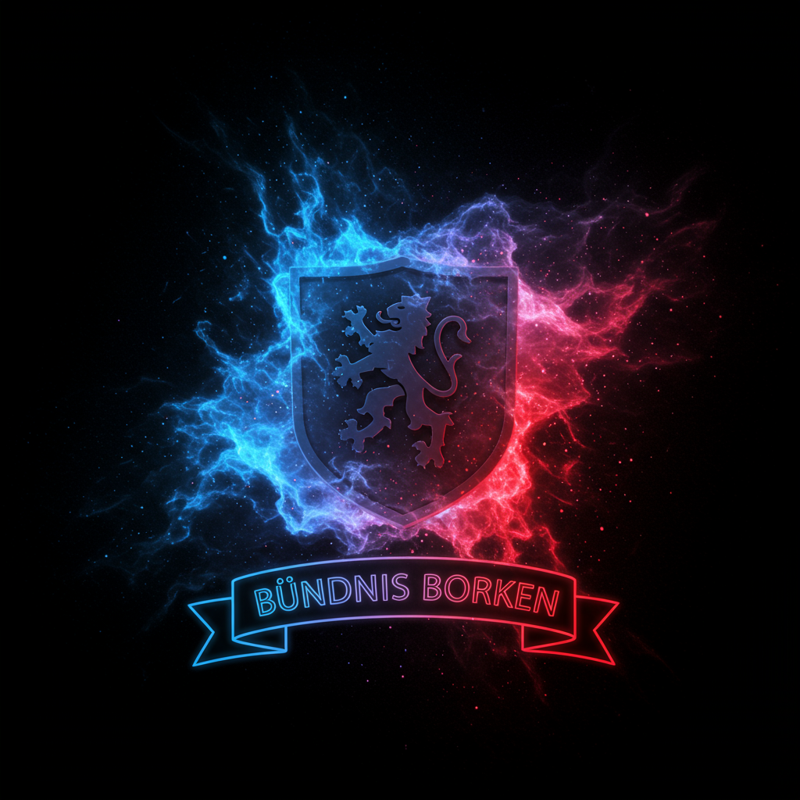

Hier könnte ihre Werbung stehen
Dynastie
Es ist ähnlich wie das Dynastie Projekt von Caravas nur mit Mods
Vier Nationen. Vier Wege.
- Dschungel
- Wüste
- Eis
- Berge
Jede Nation hat eigene Vor- und Nachteile.
Bestimmte Ressourcen gibt es nur in bestimmten Gebieten> (z.B Rucksäcke die
kann man nur mit Hasenfell machen ➔ das findet man nur in
Wüsten(Hasen)) – Handel, Strategie oder Krieg entscheiden über
euren Erfolg.
Mods erwarten euch außerdem Waffen, Kanonen,
Bomber, Flugzeuge und mehr.
➔ Das Modpack findet ihr unten, das finale Modpack ist ab Version 3.0.0. Wichtig ist auch noch das das Modpack max. 131 Mods haben wird.
Politik, Krieg & Intrigen
- Machtwechsel sind komplett spielergetrieben
- Herrscher können gestürzt werden
- Bürgerkriege sind möglich
- Grenzen sind verschiebbar
- Spionage und heimliche Fraktionswechsel sind erlaubt
➔ Alles, was passiert, entsteht durch euch.
Jede Nation besteht aus ca. 8 Spielern.
Verlauf wie bei Dynastie?
Ja, der Verlauf wird jede Woche Freitag oder Samstag fortlaufend sein. Das heißt, der Server ist nur zu einer bestimmten Zeit an diesen Tagen erreichbar. Geplant ist als Serverstart der 4.4. und das Projekt soll mindestens 8 Wochen laufen.
Tod?
Hier gibt es eine besondere Regel: Wenn man durch einen Spieler getötet wird, ist man komplett aus dem Projekt ausgeschieden. Stirbt man auf andere Art, kann man Einwand einlegen, um wieder ins Projekt zu kommen.
Meldet euch einfach, wenn ihr dabei sein wollt, und ihr seht auf dem Server in der Liste welcher Nationen wer drin ist. Je schneller wir genug Leute haben, desto schneller startet der Server!
Bei Fragen oder Feedback meldet euch über den Discord.
Lunaria the Creater
Es ist ein Mods Projekt von Lord_Simpel, mit der hauptmod "Create".
Geplant ist als Serverstart der 6.6.2026. Das Modpack wird max. 111 Mods haben.
Discord von LunariaPartner
Bündnis Borken
Bündnis Borken ist ein Zusammenschluss/eine kleine Nation, die gerne auf Minecraft Servern spielt.
Discord der von dem RP-Server Bündnis Borken

Über Mich
Zauber_Studios
Ein Film Kanal, wo Minecraft Filme veröffentlicht werden.
Der_Zauberer_HD
Ein ganz normaler Let's Play Kanal für verschiedene Spiele.
Archiv
Lunaria
Lunaria war ein Minecraft Modpack Projekt, das über Lord_Simple lief, es gab neue Structuren so wie Vanilla Minecraft verbesserungen. Aber so das man keine Mods instalieren muste.
Hier kannst du bald die Minecraft-Welt herunterladen (Stand: 21.03.2026):
TurtleCraft
TurtleCraft ist ein Minecraft Vanilla Projekt, das über theredcraft läuft.
Hier kannst du ab Projekt Ende die Welt herunterladen (Stand: 21.03.2026):
Minecraft Kumpel
Minecraft Kumpel war ein Minecraft Modpack Projekt, das über Lord_Simpel anfangs lief und dann wegen einem Streit von Olmago weiter gefürt wurde. Das Team bestand aus Der_Zauberer_HD, Fluff_Nicklas, Skymax801, Mod-Pottkartoffel und dem Hoster (Lord_Simpel/Olmago).
Hier kannst du das Modpack und die beiden Minecraft-Welten herunterladen (Stand: 26.01.2026):
Create: The Perfect World
Create: The Perfect World war ein Minecraft Modpack Projekt, das über theredcraft lief, die Idee kam von Hanns. Es war ein Mods Projekt mit der Hauptmod "Create".
Hier kannst du das Modpack herunterladen (Stand: 21.03.2026):
Create: The Perfect World Modpack
Create: The Perfect World Welt herunterladenGalactic SMP
Galactic SMP war ein von haubsichtlich Lord_Simple/Applepie/Lucius/zipfelklatscher_87_fuchsy/Der_Zauberer_HD geführtes Minecraft Projekt. Das als nachfolger von Planety 2 fungierte.
Hier kannst du LEIDER nicht die Minecraft-Welt herunterladen, weil diese Welt verlohren gegangen ist (Stand: 21.03.2026)
Ludari
Ludari war ein von haubsichtlich Red_Seb geführtes Minecraft Projekt. Das als nachfolger von Mostkumple fungierte.
Hier kannst du die Minecraft-Welt herunterladen (Stand: 25.11.2025):
Planety 2
Planety 2 war ein von haubsichtlich Lord_Simple/Applepie/Lucius/zipfelklatscher_87_fuchsy/Der_Zauberer_HD geführtes Minecraft Projekt. Das als nachfolger von Planety fungierte.
Hier kannst du LEIDER nicht die Minecraft-Welt herunterladen, weil diese Welt verlohren gegangen ist (Stand: 26.01.2026)
Moustkumpel
Moustkumpel war ein von haubsichtlich Red_Seb & Pottkartoffel geführtes Minecraft Projekt. Das als nachfolger von dem Rhababs Server 2 fungierte.
Hier kannst du LEIDER nicht die Minecraft-Welt herunterladen (Stand: 26.01.2026)

Planety
Planety war ein von haubsichtlich Lord_Simple/Applepie/Lucius/zipfelklatscher_87_fuchsy geführtes Minecraft Projekt. Das als nachfolger von dem Rhababs Server 2 fungierte.
Hier kannst du LEIDER nicht die Minecraft-Welt herunterladen, weil diese Welt verlohren gegangen ist (Stand: 26.01.2026)
Rhababs Server 2
Das war ein von haubsichtlich Rhababs & Comunity geführtes Minecraft Projekt, da Rhababs nicht mehr auf seinem Server spielete, hat Nitrado den Free-Server gekündigt. Der Server war nur Free, da er Passiv Werbung für Nitrado gemacht hatte, in dem er auf dem Server spielte. Irgendwann kam er nicht mehr dazu und da hat Nitrado in einfach gekündigt. Rhababs ist ein Streamer und Youtuber.
Hier kannst du LEIDER nicht die Minecraft-Welt herunterladen, weil diese Welt verlohren gegangen ist (Stand: 26.01.2026)
Rhababs Server 1
Das war ein von haubsichtlich Rhababs & Comunity geführtes Minecraft Projekt. Rhababs ist ein Streamer und Youtuber.
Hier kannst du die Minecraft-Welt herunterladen (Stand: 29.01.2026):